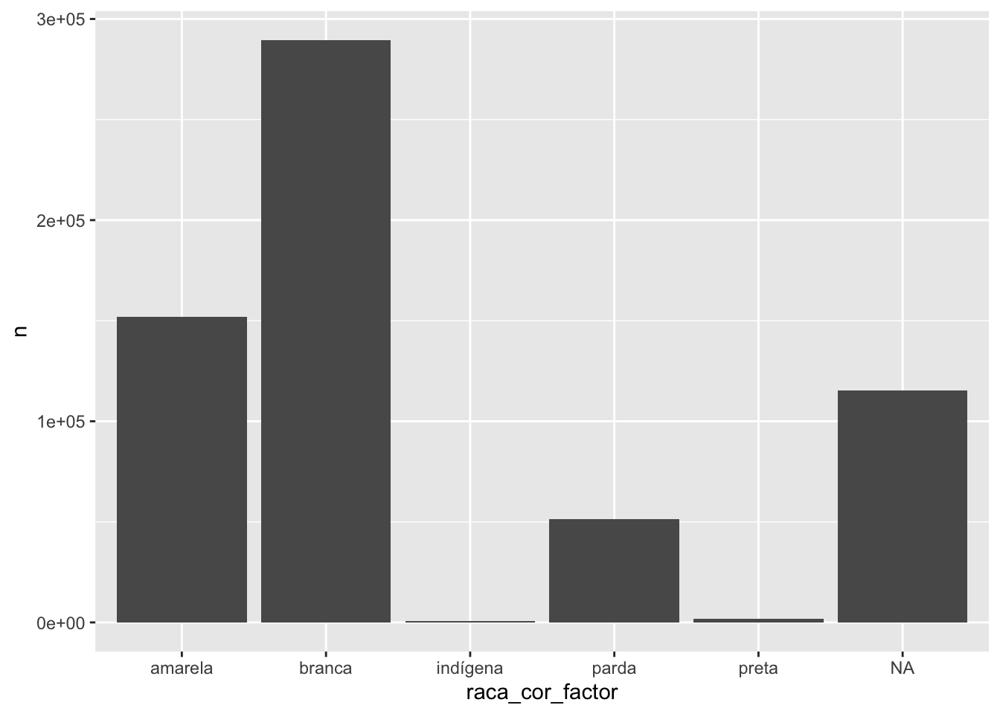

Para verificação da variável raça/cor foi utilizado o vídeo do Fábio Rocha (2023) referência.
library(microdatasus)
library(dplyr)
library(tidyverse)dados = fetch_datasus(year_start = 2000,
year_end = 2005,
uf = "MG",
information_system = "SIM-DO")Salvando dados. Sempre salvar dados baixados de fonte externa como .rds, pois salvará tempo.
saveRDS(dados, file = "data/dados.rds")start_time <- Sys.time()
dados <- readRDS("data/dados.rds")
end_time <- Sys.time()
end_time - start_time## Time difference of 0.9437048 secslibrary(expss)
cross_cases(dados, RACACOR)numero total de brancos, pardos, pretos, amarelos, indígenas
racacor_df <- dados %>% count(RACACOR, sort = TRUE)Transforma coluna com caracteres em nomes de raça/cor
racacor_df <- racacor_df %>%
dplyr::mutate(raca_cor_factor = ifelse(racacor_df$RACACOR == "1", "branca",
ifelse(racacor_df$RACACOR == "2", "parda",
ifelse(racacor_df$RACACOR == "3", "preta",
ifelse(racacor_df$RACACOR == "4", "amarela",
ifelse(racacor_df$RACACOR == "5", "indígena",
ifelse(racacor_df$RACACOR == "9", "ignorado","0")))))))Nesta parte, poderemos estimar o número de indivíduos sob risco, considerando as categorias raciais brasileiras.
library(ggplot2)
# Basic barplot
ggplot(data=racacor_df, aes(x=raca_cor_factor, y=n)) +
geom_bar(stat="identity")